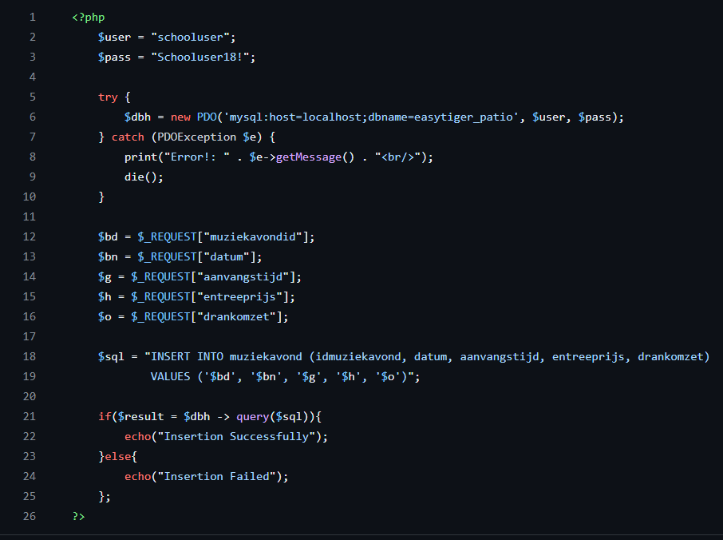
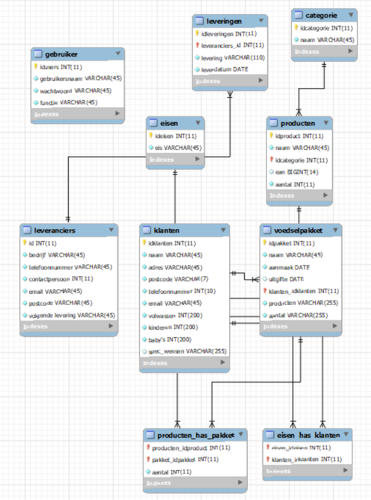
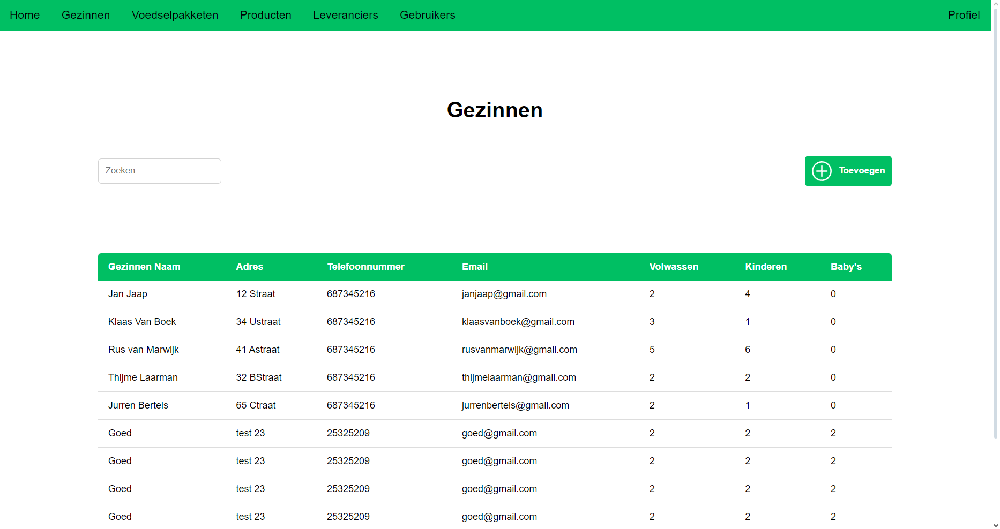
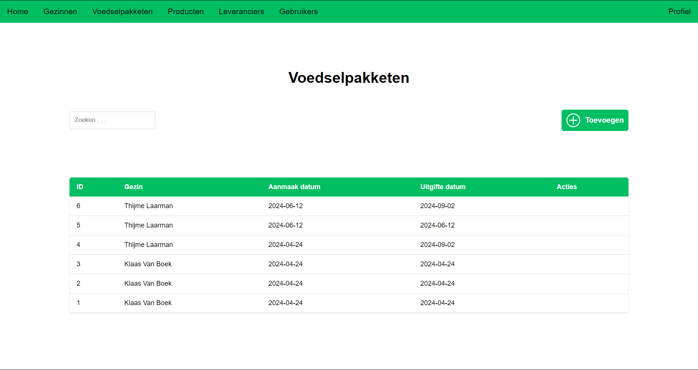
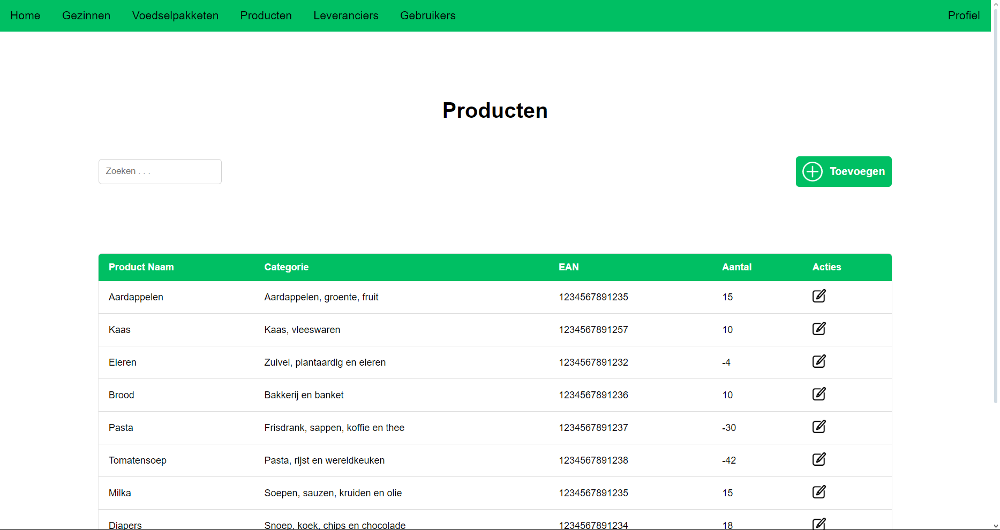
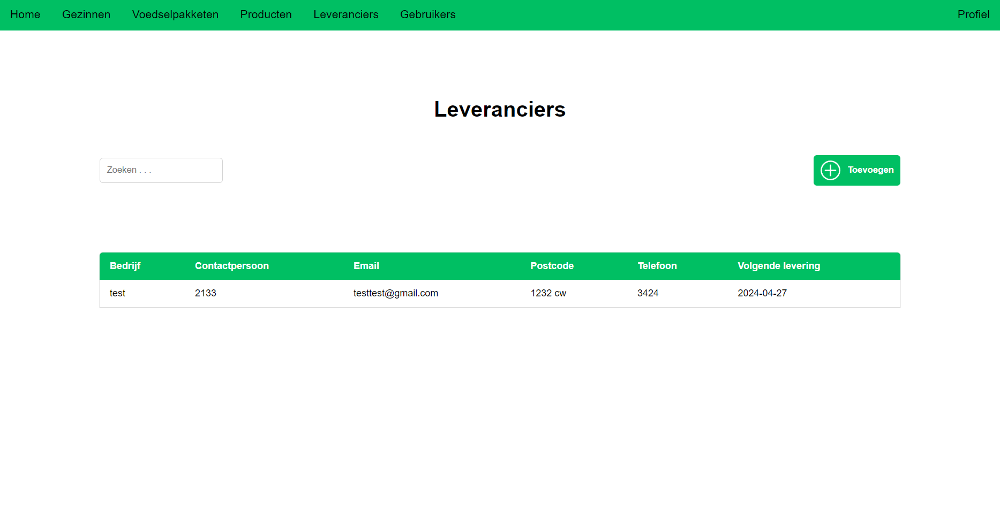

Food Bank Project
This was my end project for my college major, I was put into a team of 4 people, together we were tasked to make a functional foodbank website which would operate and handle making foodpackets, keeping distrubiter data, workers data and much more which I'll explain here.
How it works
I made the connection using a try and catch exception so that we could connect our database to the website.

Picture below showcases the model of our database:

The pages where we worked on were:
Gezinnen (Families), Voedselpakketen (Foodpackets), Producten (Products), Leveranciers (Suppliers), Gebruikers (Users)
Gezinnen:
On this page you'd be able to see the families that have signed up for the foodbank and if you're a high enough rank you'd be able to add some, its accompanied with a search bar on the left that works with javascript AJAX to talk with the database via php.

Voedselpakketen:
This would be the main page visited by workers, this is where they assemble the packets for the families, once you press on toevoegen you'll be met with a page showing a table on the bottom that showcases the products added and a multiple select bar above it to select a family to add the packet to, once you select a family their alergies are showcased at the left top list to prevent a allergic reaction.

Producten:
Products would be where the administrators log supplies added, it'll automatically be subtracted upon a packet being made, but wont be automatically added when a supply comes in, this is one of the flaws we made during programming this which we should've added. We listed this as one of the things we'd add to improve the site if this were to be a real project, here you can also add new projects or change their categorry, upon a product being created they'd automatically get a EAN. This page also has a search bar to make it easier to find products

Leveranciers:
This is the page listing the suppliers, here you get to also list when the next shipment will be coming, for this page we didnt need to do much as not much was required, but if we were to program this further we'd add some more information such as what is in the shipment and add that to the product total

Gebruikers:
This page lists all the users that have access to the site, each rank gets restrictions on what they can and can't see besides the Directie, those have full access. Besides this page there is a profile page where you can change your password or log out.

Closing Statement:
I really liked this project as I learned how to do stuff like link php and JavaScript. it was very educational.